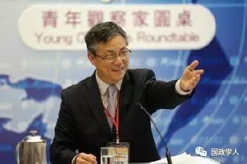

收录于合集


杨希雨
中国国际问题研究员研究员，从事亚太安全问题研究。
内容提要
朝鲜核问题逐步演变成牵动东北亚安全格局变化的战略性问题，是朝鲜内部政治因素以及外部安全因素共同促成的。冷战时期，苏联与朝鲜的全面核能合作为朝鲜跨过核武器门槛奠定了基础，而美国对朝敌视政策，以及20世纪90年代初半岛安全结构剧烈倾斜，迫使朝鲜加快核武装步伐。朝开发核武的目的不是要“先发制人”打“核大战”，而是要拥核自保、拥核自重，既遏制韩美同盟侵朝，又调动美国重视朝鲜，同朝鲜“建立一种着眼长远的战略关系”。中国坚定坚持无核化，坚持通过“双轨谈判”实现“两个彻底”: 必须彻底清除半岛核武器，同时必须彻底解决朝鲜在政治安全经济等各方面的合理关切，以实现半岛无核化，建立半岛永久和平体制。
2016年朝鲜先后进行了两次核试验，同2006 ～2013 年的前三次核试验相比，最新的两次核试验有两个非常显著的特点: 第一，1月进行的第四次核试验，尽管爆炸当量与前三次无太大差别，但这是朝鲜第一次宣布为“氢弹试验”; 第二，9月的第五次核试验，爆炸当量明显超过以往任何一次核试验，各种迹象和指标表明朝鲜已经掌握万吨级当量的小型核弹头技术，甚至是能够搭载到导弹上的核弹头技术。这些特点不仅标志着朝鲜的核武器技术开发取得实质性突破，而且更表明，朝鲜的核决心与国际社会要求朝鲜半岛无核化的意志陷入更加尖锐的对立，朝鲜核问题陷入了更加难以通过谈判解决的死胡同。美国等国政府乃至其媒体和学术界由此把目光转向中国，甚至认为中国应该对朝鲜核问题的恶化负责任，对于中国对朝鲜的政策，也作出一些带有误导性的分析猜测，这对于国际社会加强合作有百害而无一利。事实上，中国对于朝鲜半岛无核化以及维护半岛和平稳定的坚定意志和严正立场从未改变，因为这不仅涉及到中国和平崛起进程中的大国担当和大国责任，更重要的是，能否以和平方式实现半岛无核化，事关中国在东北亚这个至关重要地区的战略安全利益。但是，衍生多年而错综复杂的朝鲜核问题，远不是依靠制裁、施压甚至军事威胁等手段就能和平解决的，必须通过对话与谈判来全面、公平地落实六方会谈《9·19 共同声明》所列各项目标与原则，才能实现朝鲜半岛无核化以及半岛持久而可靠的和平稳定。本文试图从朝鲜核问题的发展演变过程来分析朝鲜发展核武器的内在与外在动因，结合中国解决朝鲜核问题的基本思路，分析阐述中国的基本立场以及中国总体的对朝政策。
一、朝鲜核战略的发展演变
朝鲜核问题自20世纪80年代后期出现，逐步演变成牵动东北亚安全格局变化的战略性问题，这是朝鲜内部的政治和战略因素，以及朝鲜所处艰难的外部安全环境因素相互作用共同促成的。在核问题的博弈互动中，朝鲜核战略不断发展变化，大体经历了三个阶段。
(一) 战略启动阶段( 20世纪50年代中期到80年代末) : 以核能开发带动核武计划。 把朝鲜建设成核武器拥有国，这是朝鲜三代领导人长期追求和坚持的战略目标。朝鲜开发核武器的努力始于1956年正式启动的朝鲜与苏联的核合作。早在朝鲜战争结束不久，金日成主席就明确表示: “朝鲜国家虽小，但别国拥有的东西都应该有，包括原子弹。”严峻的安全环境也更加坚定了朝鲜走上核开发道路的战略决心。1958年，美国把载有核弹头的“诚实约翰”导弹以及280毫米原子弹大炮等战术核武器部署到韩国，此后不断增加部署，到1967年美在韩部署的战术核弹头高达950枚。
1959年，朝鲜和苏联签署了核合作协定。然而，囿于自身条件限制和外部因素的制约，朝鲜核计划启动之初并不是直接从事核武器开发，而是从和平利用核能发电起步，既通过利用本国相对丰富的天然铀矿产资源来弥补石油天然气资源的空白，也利用核发电设施建设，为生产用于制造核武器的易裂变材料打好基础。而苏联在中苏关系矛盾加剧的战略背景下，为了恢复其在朝鲜战争爆发前同金日成政权的特殊关系及其独特的影响力，也热衷于同朝鲜开展核技术合作。朝苏在核合作方面互有需求但各有打算，使得朝鲜的核工业乃至核武器开发进展并不快，基本停留在民用核能以及核医疗研究领域。80年代末，从硬件设施上，朝鲜已经累积起一定规模的核“家底”，都属于民用范畴。另外，苏联为朝鲜培养了数以百计的核工程技术人员，朝鲜核武器计划的功臣人物徐相国、韩仁锡、李升基、崔学根等，就是其中的佼佼者客观地看，从50 年代中期到80 年代初期将近30年的时间里，朝鲜并没有把它拥有的天然铀矿资源以及有限的核设施，直接用于开发核武器，因此连美国情报部门在1983 年5 月提交的一份绝密文件中也认为，尽管已经拥有一些核设施，但是这并不表明朝鲜生产制造了可用于开发或者进行试验核武器所需要的核设施及易裂变材料。④朝鲜不是不想开发核武器，而是受到其唯一技术与相关物资来源国苏联的严格制约。在苏朝核合作中，苏联一方面提供大量技术和设备，持续为朝鲜培训核工程技术人员，另方面严格禁止提供任何军用领域核技术核材料。到80年代中期，当朝鲜的核设施初具规模时，苏联强烈要求朝鲜正式加入并签署《核不扩散条约》(NPT) ，并以此作为继续帮助朝鲜建设重水反应堆的前提条件。苏、朝在NPT 问题上的公开态度，很微妙地揭示了双方在朝核问题上的截然不同立场。1985 年12 月，在苏联保证向朝鲜继续提供建设核反应堆的相关援助后，朝鲜正式签署加入NPT。对于这一重大举措，朝鲜官方媒体集体保持缄默，没有给予任何报道，倒是苏联官方媒体进行了大肆宣传报道。NPT 规定18 个月内签署有关安全保障条款的附加议定书( 以下简称“议定书”) ，在“最后期限”到来之时，即便面临巨大国际压力，朝鲜也明确拒绝签署。在苏联压力以及中苏积极劝说下，朝鲜立场开始转变， 1991年12月，朝鲜宣布同意签署，中国外交部迅即给予积极回应。1992年5月朝鲜正式签署“议定书”并接受国际原子能机构(IAEA) 按约核查，国际社会严重关切的朝核武问题似乎得以化解。然而后来围绕核查的事态发展深刻说明，朝鲜核计划虽然是从民用项目起步，但朝鲜决策层从一开始就为开发核武器预留了战略与技术空间，这成为后来朝鲜核危机反复爆发的原因之一。
(二) 战略模糊阶段( 20 世纪90 年代到2011年) : 一手高举无核化旗帜，一手大力研发核武器。 从拒不签署“议定书”到有保留地签署并履行，再到1993 年强硬拒绝IAEA 赴现场核查，朝鲜同国际社会的矛盾急剧升温，人们日益怀疑并最终确信，朝鲜已经跨过了NPT 红线，沿着核武器开发的道路奋力前行。由于内外环境的巨大变化，朝鲜出于兼顾外交与安全的需要，执行了一种核武器开发模糊战略，在无核化与核武开发之间、在对美外交需要与加强自身安全之间搞平衡，从而形成了一手高举无核化旗帜、一手大力开发核武器的并行路线。
20 世纪90年代初期，朝鲜已经具备了从宁边5兆瓦重水反应堆所产生的乏燃料棒中提取武器级钚的能力，美国从此开始日益深入地介入朝鲜核问题，而这个时期恰恰也是朝鲜半岛安全格局发生颠覆性变化的时期。90年代初，冷战随着苏联解体而突然终结，朝鲜对韩国曾经占有优势的政治外交平衡发生根本性逆转。冷战时期中美苏战略大三角结构中，中、苏两大国在国际舞台上，特别是在联合国安理会全力支持朝鲜，拒不承认韩国; 美国则是韩国的后盾，连同日本一道，长期拒不承认朝鲜。 1975 年美国在联大正式提出“交叉承认”建议，即美国和日本承认朝鲜并与之建交; 作为交换，中国、苏联须承认韩国并与之建交; 朝韩同时加入联合国。 历史地看，这一建议颇具建设性。但是在当时的战略态势下，该建议明显是韩国获利大于朝鲜，自然遭到朝鲜的严辞抨击和拒绝。但是到了1990 年，苏联不顾朝鲜强烈反对和威胁，同韩国实现了邦交关系正常化; 而中国也开始审时度势地调整 “一边是盟国一边是敌国” 的半岛政策，加快了对韩国接触步伐。1992 年中韩建交。至此，当年美国建议的“交叉承认”虽然没能实现，但韩国“无条件”地获得了苏联( 后来是俄罗斯) 以及中国的承认，而朝鲜只是与韩国同时加入了联合国，却丧失了与美国、日本建立正常外交关系的机遇。冷战时期朝—中—苏“三角同盟”不复存在，而美韩同盟及韩—美—日“战略三角”则得以持续并加强，持续了近40 年的半岛安全与外交均衡，急剧向着不利于朝鲜的方向发展。朝鲜面对上述国际形势的剧烈变化，也迅速调整了对美对韩战略，力图改善朝美关系，实质性改善南北关系。1992 年1 月，朝鲜劳动党中央书记金容淳率团访美，在纽约同美国副国务卿坎特举行会谈，实现了朝鲜战争以来朝美双边首次高层政治接触。据直接参与会谈的前美官员记述，金容淳向坎特副国务卿释放了朝鲜要与美国建立战略合作关系、同中国拉开距离的重要信号，宣称朝鲜过去的百年悲惨历史，使朝下决心要“远交近攻”。同时，朝韩之间也展开了更具实质性的南北和平和解与合作会谈以及朝鲜半岛无核化会谈。为敦促南北双方达成无核化协议，美国总统布什于1991年9月正式宣布，撤出美军部署在韩国的全部战术核武器。朝韩双方于同年12月签署了《南北基本协议》和《朝鲜半岛无核化联合宣言》。两大宣言签署后，朝鲜首次同意IAEA 专家到宁边进行现场核查，但核查反而成了第一次朝鲜核危机的导火索。IAEA 专家组通过核查发现朝鲜此前申报的提炼钚的数量，与实际提炼生产的数量不符，因此要求进一步核查两处被怀疑用于制造核武器材料的设施，遭到朝鲜强硬拒绝并宣布将退出NPT。美国克林顿政府建议朝鲜暂停退约行动，并随即与朝鲜展开谈判，双方于1994年10 月在日内瓦正式签署了《框架协议》，不仅化解了一触即发的核危机，而且打开了朝美全面接触的大门。据统计，1993 ～ 2000 年期间，朝美展开了核、导、反恐怖主义、互设联络处、朝鲜半岛能源开发项目、双边经贸关系等22 个问题的密集的对话与谈判，其中16 个问题签署了协议。《框架协议》的签署开启了美国对朝提供各种无偿援助的大门，从1995 年到2006 年朝鲜进行第一次核试验之前，美国向朝鲜提供了135．7 万吨粮食援助，成为朝鲜外来粮食的主要提供国家之一。②在密切接触的基础上，两国实现了高级别政治互访。2000 年10 月，朝鲜国防委员会第一副委员长赵明录次帅访问华盛顿，朝美签署联合公报，确立了朝鲜半岛无核化、朝鲜暂停一切与导弹技术相关的发射活动、双方互不侵犯、加强合作、迈向全面关系正常化等原则和目标。但是2001 年，美国信奉新保守主义的布什政府上台，给朝美双边关系改善进程带来了巨大的不确定性。2002 年10 月，美根据巴基斯坦政府提供的有关朝鲜秘密开发浓缩铀项目的相关信息，派代表团赴平壤举行会谈，双方在浓缩铀问题上陷入严重分歧，不仅终结了关系改善进程，美国还彻底废除了《框架协议》，朝鲜遂于2003 年1 月宣布退出NPT。即便如此，朝鲜并未放弃“朝鲜半岛无核化”原则，这成了中国发起六方会谈的基础。然而，六方会谈并没有阻止朝鲜开发核武器的步伐。2005 年2 月，朝鲜宣布已经制造了核武器，成为核武器拥有国。同年9 月，六方会谈各国就朝鲜半岛无核化、半岛持久和平、东北亚安全合作等重大原则问题达成共识，并发表了共同声明，朝鲜郑重承诺放弃一切核计划。③ 但朝鲜依然在次年10 月进行了第一次核试验。随着六方会谈于2008 年彻底陷入僵局，朝鲜加快了核武器开发的步伐，2009 年进行了第二次核试验，并加快准备第三次核试验。同时，曾经导致第二次核危机的朝鲜浓缩铀项目也加快了开发进度，并邀请美国专家于2010 年11 月现场参观了浓缩铀设施。从1991 年12 月与韩国签署《朝鲜半岛无核化联合宣言》，到2011 年12 月金正日委员长逝世，朝鲜在开发核武器问题上一直采取模糊战略，一方面始终强调坚持半岛无核化，另方面一刻不停地开发核武器，从无到有，实现了从提炼加工武器级钚材料和浓缩铀，到制造和成功进行核试验，在打着无核化旗帜的过程中悍然跨过了核门槛。
(三) 战略展开阶段(2012年迄今) : 全面开发原子弹、氢弹及弹道导弹，做“堂堂正正核国家”。2011 年末金正恩执掌朝鲜最高权力后，完全放弃了无核化原则，通过提出“并进战略”(发展经济和发展核武并行推进) ，把开发和拥有核武器提到国家战略的高度，④不仅明显加快核武器的开发步伐，而且投入更大资源全面开发能够携带核弹头的中程和远程弹道导弹。在金正恩执政的5 年时间里，朝鲜先后进行了三次核试验、三次潜射导弹试验以及数十次弹道导弹试验，仅“舞水端”中程导弹就进行了七次发射试验。据美国专家估计，按照目前核武器开发的进度，到2020 年，朝鲜有可能制造出50 到100 枚核武器。从朝鲜已有的核武器开发能力看，美国专家的估计并非没有道理。经过几十年在人才、技术、生产制造等各方面的积累，朝鲜拥有了较为成熟的钚生产能力，并建立起量产规模的浓缩铀生产系统，这就为朝鲜利用钚和浓缩铀两种资源制造尽可能多的核弹头，奠定了稳定的物质基础。而朝鲜经过五次核试验，不仅掌握了较为成熟的核弹制造技术，而且实现了核弹小型化。理论上，掌握了技术并拥有易裂变材料生产能力的朝鲜，完全可以实现相对稳定的量产，在较短时期内成为中等规模的核武器国家。相对核武器开发的进展，朝鲜在导弹开发方面相对滞后。1998 年朝鲜进行的首次与远程导弹技术密切相关的卫星发射试验失败，直到2012 年的两次发射试验，终于成功地把卫星送入太空。2016年2月朝鲜再度成功进行了卫星发射试验，但卫星火箭技术毕竟不完全等同于弹道导弹技术，在朝鲜所进行的陆基和潜射导弹发射试验中，失败多于成功，这表明朝鲜的弹道导弹技术仍处于不成熟的研发阶段，仍有很长一段路要走，这意味着朝鲜在初步掌握了核弹技术之后，将把开发重点转移到导弹开发方向，今后将进行更多的卫星火箭、弹道导弹发射试验，直到获得稳定而成熟的技术。总之，把发展核武器作为国家战略目标的朝鲜，在核武器开发取得阶段性成就、弹道导弹开发尚不成熟的形势下，今后还会择机进行新一轮核试验，并进行更多的弹道导弹及卫星发射试验。为建设“堂堂正正的核国家”，朝鲜把核武器及导弹开发的技术指标定位在哪里? 或者说，朝鲜核弹以及导弹达到什么程度，才会完全停止这类既严重挑战国际社会、又给自身带来巨大压力的核试验和导弹试验? 朝鲜官方对此从未给予明确说明。但综合朝鲜官方通讯社发布的有关信息可以判断，第一，朝鲜将持续从“质”和“量”两个方面加强自己的核武库，这意味着在掌握和拥有了核裂变弹头之后，朝鲜还将继续开发爆炸当量更大的核聚变弹头。朝鲜宣布它所进行的第四次核试验是氢弹试验，但是根据有关国家的地震监测等指标，几乎没有人相信这是一次氢弹试验，然而这种宣布的确可以说明朝鲜或迟或早将进行真正的氢弹试验。第二，朝鲜已经拥有较为成熟且数量巨大的短程导弹，将继续推进中程导弹和洲际弹道导弹试验，使之成熟、可用，并实现搭载核弹的能力，实现核武器的实战化。第三，朝鲜发展核武器的终极技术指标，是拥有能够覆盖韩国、日本、关岛、夏威夷和阿拉斯加以及美国本土的核打击能力，与美国形成“不对称的相互威慑”。所谓“不对称的相互威慑”，指美国核武器拥有数量与质量的绝对压倒优势，但朝鲜拥有独特的地缘安全优势，美国要对一个国土面积只有12万平方公里且毗邻中国以及韩国人口密集地区的朝鲜实行任何精密制导打击，都会引爆大国矛盾并挑起盟国强烈反弹，来自中国、韩国、俄罗斯的“第三方因素”，是朝鲜制衡美国核优势的沉甸甸战略砝码; 而核武数量与质量处于绝对劣势的朝鲜，一旦下决心对幅员辽阔的美国实施“先发制人”核打击时，完全不必考虑类似美国顾虑的“第三方因素”。这是朝鲜能够同美国实现“核威慑平衡”且直接牵涉多方战略安全利益的基本因素。尽管多次宣称要对美国实施“先发制人”的核打击，朝鲜并不是真的要同美国打核战争，而是要以核武器为盾牌和战略杠杆，一方面遏制韩美同盟对朝动武、颠覆朝鲜政权，另方面调动美国重视朝鲜，平等对待朝鲜，彻底改变对朝敌视政策，同朝鲜“建立一种着眼长远的战略关系”。从1992年1月朝美会谈，到2000年10月朝鲜高规格接待美国国务卿奥尔布莱特，到2012 年3月朝鲜副外相李勇浩在闭门会上通过即将出任国务卿的克里转达的金正恩口信，以及金正恩本人通过美国篮球明星罗德曼向奥巴马总统传递的口信，都明确表明了朝鲜要同美国做朋友，而不是做敌人的坚定而明确的政治意愿。而对于美国绝不容忍的朝鲜核武器，金正恩也在2016 年召开的劳动党七大报告中郑重承诺“不扩散”、“不首先使用核武器”、做“负责任的国家”。纵观朝鲜半个多世纪以来的核战略发展，从长期坚持无核化口号，到要做“堂堂正正核国家”，构建“朝美相互核威慑平衡”，其发展变化的路径和策略在上述三个阶段各有不同，但朝鲜发展核武器的决心始终是坚定不移的，发展核武器的目标也是始终未变的，这种决心和目标概括起来就是: 拥核自保，拥核自重，即以核武器提升国家安全，以核武器提高朝鲜在地区乃至全球的战略地位，特别是提升朝鲜同美国这样一个超级大国进行战略博弈、战略对话及战略合作的分量。
二、中国在朝鲜核问题上的政策立场
从冷战到后冷战时期，中国始终明确反对朝鲜发展核武器以及弹道导弹等大规模杀伤性武器。20世纪80年代朝鲜最高领导人金日成主席提出朝鲜半岛无核化的倡议、朝韩签署《朝鲜半岛无核化联合宣言》后，中国更是坚定支持并积极推动。中国共产党十八大以来，中国进一步明确了实现朝鲜半岛无核化的坚定立场。2013 年5 月，习近平总书记在会见来访的朝鲜最高领导人金正恩特使、人民军次帅崔龙海时，明确指出: “朝鲜半岛无核化和持久和平稳定，是人心所向、大势所趋。中方立场十分明确，不管局势如何变化，有关各方都应坚持半岛无核化目标，坚持维护半岛和平稳定，坚持通过对话协商解决问题。 ”②这既是向朝方，也是向国际社会乃至中国国内，表明了中国党和政府在朝鲜半岛无核化问题上对历史负责的原则立场。习总书记的上述阐述，反映在中国的外交实践中，就体现为 “三个坚持” ，即坚持无核化，坚持和平稳定，坚持通过对话和谈判来解决问题。自从1993 年第一次朝鲜核危机爆发以来，中国就明确按照“三个坚持”来谋求和推动和平解决核问题，而这也构成了中国发起和推进六方会谈进程的指导方针。从1993 年到2003 年中国正式发起六方会谈之前，中国采取不直接介入的立场，只是通过积极促进美国和朝鲜直接谈判来和平解决核问题。在这期间，尽管中国积极参与了在日内瓦举行的四方会谈，但始终坚持让四方会谈聚焦朝鲜半岛的永久和平问题。2002 年10 月，第二次朝核危机爆发，布什总统高调宣称“不排除任何选项”，导致朝鲜半岛危机骤然升高，甚至有爆发战争的危险。中国政府遂改变了多年来一直坚持的“不直接介入”的原则，转而在美国和朝鲜之间展开了密集的斡旋外交，并于2003 年4 月在北京主持召开了美朝中参加的三方会谈，稍后又发起了由美国、朝鲜、中国、韩国、俄罗斯、日本共同参加的六方会谈。中国对六方会谈所设定的核心议题，就是通过和平方式解决朝鲜核问题，实现整个朝鲜半岛的无核化。中国认为，解决朝核问题的钥匙，自从1993年以来至今，就始终掌握在朝鲜和美国手中，中国通过外交手段所能做的，就是要让朝鲜和美国交出和平解决核问题、和平地实现半岛无核化的钥匙。为此，中国把自己的角色定位为谈判的组织者和斡旋者，在整个六方会谈的进程中，中国所承担的最根本职责，就是作为会谈的主席国，一方面根据各方共同利益和不同诉求，综合而均衡地策划谈判路线图和议题，另方面努力在有关各方之间劝和促谈，推进会谈由易到难、循序渐进地争取阶段性成果。相比六方会谈的其他各方，中国占有一种独特的地位和优势，例如，中国同其他所有各方，特别是朝鲜和美国之间，都保持着良好的政治关系和畅通的外交沟通渠道。这种独特地位，给中国发挥作用提供了便利和优势。但另方面，无论是中朝之间的友好关系，还是中美之间顺畅的政治互动关系，都存在着许多复杂的消极因素，这又极大制约了中国对美国或者对朝鲜的影响力。换言之，中国作为斡旋者，对于美国或者朝鲜的影响力，又是十分有限的。这种既有独特优势地位，但影响力又十分有限的地位，使得中国在推进六方会谈的进程中，在技术层次的问题上，以及在共同原则和谈判框架的确立方面，能够发挥关键的引领作用，但对于六方会谈的两大根本性问题，即如何彻底地、可验证地、不可逆地消除朝鲜的核武器及其相关计划，如何全面解决朝鲜安全、政治、经济等各领域的合理关切这两个关键方面，中国始终没有足够的影响力和主导权，去推动有关各方达成一个一揽子交易。尽管如此，中国依然通过艰苦的外交努力，成功地推动有关各方于2005 年9 月19 日达成了《9·19共同声明》，它不仅为实现半岛无核化确立了各方共同接受和遵守的政策与原则框架，而且该文件确立了“朝鲜半岛无核化”、“谈判建立半岛永久和平体制”以及“各方平等参与东北亚安全合作机制”三根支柱，这就为最终达成一揽子解决方案，奠定了综合解决、标本兼治的基础。从共同声明内容看，中国对于和平解决朝鲜核问题的基本思路是综合治理综合解决。这个基本思路具体体现为三个基本点。第一，朝鲜必须彻底放弃一切核武器及其相关计划; 朝鲜在安全、政治、经济、外交等各领域的合理关切，必须同时得到解决;朝鲜彻底弃核，同彻底解决朝鲜合理关切，必须按照“承诺对承诺，行动对行动”的公平原则，同时而对等地解决。第二，朝鲜半岛无核化的实现，离不开半岛持久和平秩序的建立，为此，“直接有关方”应该建立一个与六方会谈并行的谈判平台，专门解决如何建立朝鲜半岛“永久和平机制”( Permanent PeaceＲegime) 的问题。第三，包括朝鲜在内的东北亚各国，在实现朝鲜半岛无核化并建立半岛永久和平体制的进程中，扩展安全合作和经济合作，建立旨在促进共同安全的东北亚安全合作机制，建立紧密的经济合作关系。这三方面是解决错综复杂的朝鲜半岛问题乃至东北亚各国共同安全问题的基本框架。对于朝鲜而言，最重要的是，《9·19共同声明》确立的基本框架意味着朝鲜是半岛无核化与持久和平的利益攸关方和主要当事方之一; 在东北亚地区，朝鲜同六方会谈其他各方一样，是本地区安全与经济合作的重要成员，在未来东北亚地区安全合作与经济合作中，朝鲜占有它应有的重要地位。共同声明虽然确立了实现无核化的原则框架和共同基础，但是在分阶段分步骤走向最终目标的过程中，每向前迈进一步，都意味着更多的不确定性，每一方都不清楚自己向前迈出的一步，会换来对方什么样的对应步骤。这其实是六方会谈共同声明通过后，“去功能化”( disablement) 进程失败的根本性原因。六方会谈陷入僵局后，朝鲜明显加快了核武器开发的步伐，中朝在核问题上分歧也日益突出，中国在联合国安理会关于朝鲜核问题的决议表决中，转为积极参与决议制定并投赞成票，从赞成一般性的谴责，到赞成实施必要的制裁。中国在增加联合国对朝制裁的问题上，始终追求外交解决的途径， 一方面主张朝鲜半岛无论北方还是南方 ，任何时候都不能拥有核武器，应该坚持半岛无核化; 朝鲜必须为其违反联合国相关决议肆意开发核武器及弹道导弹的行为付出必要代价，承担相应后果; 一方面坚持制裁不是目的，而只是手段 ，安理会通过的有关决议必须为外交努力预留足够的空间，朝鲜核问题必须通过恢复六方会谈、坚持《9·19共同声明》各项原则的基础上加以和平解决。
三、中朝关系与中国对朝鲜的总体政策
中国在朝鲜核问题上的政策立场，是中国对朝总体政策的一部分，也是中朝关系中一个十分重要的问题。在中国的所有对外关系中，没有哪一个双边关系像中朝关系那样既十分重要又非常独特和高度敏感了。从冷战时期到后冷战时代，中朝关系经历了与时俱进的深刻变化。1950 年朝鲜战争爆发后，中国被迫奋起进行了抗美援朝战争，用生命和鲜血与朝鲜结成军事同盟关系。朝鲜战争结束后，随着半岛冷战格局的固化以及中苏关系的破裂，1961年，朝鲜同相互对立的中国和苏联分别签署了内容几乎相同的友好互助同盟条约。中朝友好同盟互助条约在20年到期后，双方同意自动延续。进入21世纪，中朝交流互访趋于活跃，并在中朝两党的最高层，就新时期发展双边关系达成重要共识: “继承传统，面向未来，睦邻友好，加强合作”，这成为21 世纪以来，中国珍视中朝传统友谊，致力于两国关系正常发展的基本方针。而朝鲜执意发展核武器的既定方针，同中国坚持半岛无核化的原则立场尖锐对立，特别是新一代朝鲜最高领导人抛弃无核化旗帜，明确确立“发展经济与发展核武器并重”的新战略，不顾国际社会的强烈反对和对中国边境地区带来的潜在环境威胁，连续进行核试验，不仅使中朝友好关系陷入十分困难的局面，也给中国对朝政策带来空前复杂的矛盾。一方面，无论国际风云如何变幻，中国一如既往地坚持对朝发展“继承传统，面向未来，睦邻友好，加强合作”的方针; 一如既往地坚决维护半岛和平稳定，坚持朝鲜半岛无核化; 一如既往地坚持对朝提供有助于保障民生和发展经济的大量援助。从20世纪50年代到今天，无论处在极度贫困的欠发达阶段，还是快速进入中等收入水平的经济腾飞阶段，中国60 多年如一日地对朝提供了大量而稳定的经济援助。这在中国的对外援助历史上是绝无仅有的。另方面，朝鲜执意开发核武器，特别是2012 年以来，又把发展核武器写入新宪法，使之成为国家“双并重战略”的支柱之一，不断在毗邻中国边境的人口密集地区反复进行核试验。这种背离金日成主席亲自提出的朝鲜半岛无核化大目标的行为，危及中国边境安全和半岛和平稳定的举措，理所当然地招致包括中国在内的国际社会的坚决反对，也自然严重影响到中朝友好关系的平稳发展。中朝关系当前这种复杂的友好合作与尖锐分歧并存的矛盾结构，使中国对朝鲜的各项政策，也构成了非常复杂的框架，其中既包含大力支持，积极鼓励，也包含不干预和坚决反对。
(一) 大力支持。 朝鲜战争结束迄今，中国始终不渝地大力支持朝鲜的社会主义经济建设和民生改善，始终是朝鲜最大和持续稳定的外援提供国。金正日时代的后期，朝鲜开始重视和加强发展国民经济，特别是努力解决食品、能源短缺问题; 金正恩执掌最高权力后，更加强调发展国民经济和改善民生，特别是在2012 年4 月15 日的首次公开演讲中，明确提出“绝不让人民再挨饿”。对于朝鲜，中国通过各种形式始终给予大力支持和帮助。对于朝鲜改善民生、缓解人道主义困难，持续地给予特殊的关注和援助。进入21 世纪以来，朝鲜对于改善南北关系、改善朝美、朝日关系，付出了大量努力，中国对此一直采取积极支持的立场，并在必要时总是乐于提供力所能及的协助和斡旋。
(二) 积极鼓励。 2002 年7 月1 日，朝鲜开始了经济调改进程，逐渐引进市场机制。中国从一开始就对此给予积极鼓励。金正恩时代，朝鲜明显加快了变革步伐，大力推行“我们式的新的经济管理体系”，首先在国民经济的基础，即农村和农业领域，对生产组织结构、分配政策、农产品价格体系等进行了系统性的调整改造，随后又对城市经济体系中的工厂企业单位，扩大企业负责人的生产决策自主权力，并对生产、分配、产品自主销售等方面进行深层次的调整改造，同时放宽自由市场在国民经济中的活动范围，扩大市场因素在经济运行中的作用。2013 年以来，朝鲜通过立法和行政等形式，进一步扩大对外开放的程度，在每个道( 相当于中国的省)均设立经济开发区，其开放程度堪称“史无前例”。②对于朝鲜从制度入手，改善和提高劳动生产率的一系列努力，中国一直采取鼓励的态度，特别是在中朝各级交流互访密集进行的时期，中国通过各种形式的双边交流和接待来访各级朝方代表团，向朝鲜无保留地介绍中国自身改革和开放进程中的成功经验与失败教训，使得朝鲜在探索经济发展新路经的过程中，尽量少走弯路，更有效率。
(三) 不干预。 金正日时代，朝鲜倡导“先军政治”，国家的权力中心逐步从劳动党中央转移到国防委员会。金正恩时代，朝鲜的最高权力中心开始从国防委员会转向劳动党中央及其中央军事委员会，并由此进行了一系列重大人事调整，甚至对于个别高级官员处以极刑。中国视上述所有这些事务，均为朝鲜党、军队和国家的内部事务，本着长期奉行的“不干涉内政”原则，对朝鲜内部所有重大事务严格恪守了不干预态度和立场。
(四) 坚决反对。 核问题是中朝之间唯一的重大分歧，也是中朝友好合作关系稳定发展的唯一障碍。中国对于朝鲜发展核武器的政策与行为，始终坚决反对，并坚持不懈地试图说服朝鲜回到正确的无核化道路上来，正是基于这一立场和考虑，中国积极发起并主导了六方会谈进程，并策划和推动有关各方通过了《9·19 共同声明》。2006 年以来，中国明确支持并积极参与了安理会通过的七项决议，谴责朝鲜的核试验、导弹试验，以及同导弹技术密切相关的卫星发射试验，并同国际社会一道，对朝鲜实施必要的制裁。为此，中国政府有关部门分别于2013 年9 月、2016 年4 月、2016 年6 月先后发布了为落实安理会相关决议的三个政府跨部门行政令。中国同朝鲜长达几十年的军事装备供应关系，也因朝鲜悍然进行核试验而中断。中国在坚决反对朝鲜开发核武器和弹道导弹的同时，一直谋求推动各方重返六方会谈，通过对话谈判解决核问题。总之，中国对于朝鲜努力发展自身经济，解决经济困难和人道主义问题，投入了大量的经济与政治资源，给予了大力支持。对于朝鲜推行旨在提高经济运行效率、加快经济发展的朝鲜式的改革与开放，给予积极鼓励和帮助。对于朝鲜内部的任何重大政治事务和人事安排从不干预。对于朝鲜发展核武器的政策以及破坏朝鲜半岛和平稳定的挑衅性行动坚决反对，同时努力说服其改变现行政策，回到无核化的正确立场上来。
四、结论
冷战结束以来，中国明确地把维护半岛和平稳定以及推进半岛无核化作为自己在半岛的两大战略目标。而朝鲜核问题在过去20多年来，也越来越成为中朝分歧的关键点。但是中国在反对朝鲜发展核武器的同时，也明确主张必须以综合、均衡的方式，一揽子解决朝鲜核问题，既要彻底解决朝鲜半岛的无核化问题，同时也要彻底解决朝鲜在安全、政治、经济等领域的合理关切。《9·19 共同声明》集中反映了中国全面公正解决朝鲜半岛无核化问题的立场。近几年来朝鲜半岛局势变化错综复杂，危机反复发生，不确定性不稳定性明显增加，这种前所未有的形势变化深刻表明: 持续了半个多世纪的半岛安全格局正进入历史性结构性变化的前夜; 推动这种变化的主要驱动因素，是如何解决朝鲜核问题，要不要实现以及怎样实现朝鲜半岛无核化; 而决定这种变化结果的，是建立什么样的半岛永久和平体制，结束半岛南北双方之间的战争状态和冷战状态。
朝鲜下决心成为所谓“核武器拥有国”，使和平解决核问题的六方会谈陷入两难困境，一方面，通过和平谈判的方式说服朝鲜彻底弃核走不通; 另方面，采取非和平的军事方式消灭朝鲜的核武库更是不能做。这种两难困境，使朝鲜半岛无核化变得更加遥遥无期，甚至夭折。但是， 朝鲜顽固坚持核武装道路，也使自己陷入更为严峻的两难困境: 一方面，坚持发展核武器，成为朝鲜日益加重的“机会成本”，越是发展核武器，就越是阻碍和牺牲经济发展的机会; 另方面，朝鲜要真正解决自身经济发展日益尖锐的不可持续性挑战，实现经济现代化，以便保证政权稳定，就必须根本改善同国际社会、首先是同韩国的关系，为自身的经济现代化创造必要条件，而这必须彻底放弃核武器，实现半岛无核化。朝鲜的“并进战略”企图同时获得经济发展和核武器发展，这在事实上根本无法兼得。发展核武器必然以牺牲发展经济为代价，反之亦然。朝鲜坚持发展核武器给发展经济带来日益增加的“机会成本”，必然给其国民经济带来不可持续的挑战，经济运行的不可持续性或迟或早将迫使朝鲜在经济繁荣与现代化和发展核武器之间，做出“二选一”的战略抉择。而国际社会的责任、特别是与朝鲜直接军事对立的韩国和美国的责任，是如何创造一种令朝鲜放心地彻底放弃核武器的环境和条件，帮助朝鲜早日做出正确抉择。为此，朝鲜2016年7月5日提出的关于实现朝鲜半岛无核化的五项前提条件，①值得六方会谈有关各方予以重视和面对面共同探讨。从根本上看，南北之间的安全关系早已陷入“零和博弈”，即一方加强自身安全的努力，必然意味着另一方安全利益的受损。半岛当前安全形势的根本特征，是南北双方都在做“加法”，即增加自己的军备以增加自身安全。例如朝鲜在迅速增加核武器和攻击型导弹，而韩国在增加反导系统的同时，也在增加攻击型导弹，并引进美国的“延伸核威慑”。但是到头来，双方各自所增加的军备，都是在降低对方的安全感，从而形成“一方追求自身安全成为另一方不安全的根源”②。这种负面的安全竞赛，导致南北双方都越来越不安全，而不是越来越安全。
朝鲜半岛的未来，取决于三个关键因素: 第一，南北之间能否建立起一种相互信任机制和军事安排，首先停止互相做“加法”，并在这种机制和安排之下，制定路线图，循序渐进地相互做“减法”。在互做“减法”的进程中，美国必须承担相应的义务，采取相应的“减法”措施。第二，如何在南北启动互做“减法”进程的基础上，恢复六方会谈，继续推进朝鲜半岛无核化进程，坚定不移地实现无核化。第三，如何建立“双轨”谈判架构，一方面推动六方会谈进入实质性谈判，通过达成“一揽子”交易，实现两个“彻底”，即朝鲜必须彻底放弃一切核武器及其相关计划，而朝鲜在安全、政治、经济、外交等各领域的合理关切，必须同时得到彻底解决。另方面，按照《9·19 共同声明》的有关规定，由半岛南北双方以及半岛问题的主要外部力量中美两国，展开关于建立“朝鲜半岛永久和平机制”问题的谈判，取代1953年的临时停战协定，为半岛的长治久安和南北实现民族和解和平统一奠定基础。
文章来源：《现代国际关系》2017年第1期 ****
筛选： 凌羽 编辑： 鑫辰
声 明
国政学人微信公众平台系非盈利学术平台。建立初衷是方便广大学人进行学术研究，促进学术的传播和交流，不做任何商业用途。如有任何权利问题，请直接与我们联系。